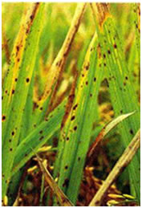
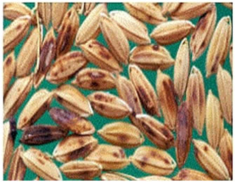
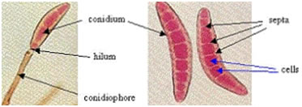
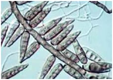
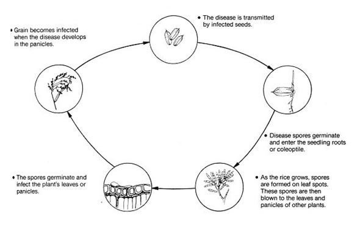

RICE :: FUNGAL DISEASES :: BROWN SPOT
Brown Spot - Helminthosporium oryzae(Syn: Drechslera oryzae; Bipolaris oryzae)
(Sexual stage: Cochliobolus miyabeanus)
Symptoms
The fungus attacks the crop from seedling to milky stage in main field. Symptoms appear as minute spots on the coleoptile, leaf blade, leaf sheath, and glume, being most prominent on the leaf blade and glumes.
{kind=link}
{kind=link}
|  |  |
Leaf symptoms |
Glume infection |
The spots become cylindrical or oval, dark brown with yellow halo later becoming circular. Several spots coalesce and the leaf dries up. The seedlings die and affected nurseries can be often recognised from a distance by scorched appearance. Dark brown or black spots also appear on glumes leading to grain discoloration. It causes failure of seed germination, seedling mortality and reduces the grain quality and weight.
Brown Spot Video
Pathogen
Bipolaris oryzae produces brown septate mycelium. Conidiophores arise singly or in small groups. They are geniculate, brown in colour. Conidia are usually curved with a bulged center and tapered ends. They are pale to golden brown in colour and are 6-14 septate. The perfect stage of the fungus is C. miyabeanus.
{kind=link}
|  |
It produces perithecia with asci containing 6-15 septate, filamentous or long cylinderical, hyaline to pale olive green ascospores. The fungus produces terpenoid phytotoxins called ophiobolin A (or Cochliobolin A), ophiobolin B (or cochliobolin B) and ophiobolin I. Ophiobolin A is most toxic. These breakdown the protein fragment of cell wall resulting in partial disruption of integrity of cell.
|  |
Coidia and Conidiophore |
Favourable Conditions
- Temperature of 25-30˚C with relative humidity above 80 per cent are highly favourable.
- Excess of nitrogen aggravates the disease severity.
Disease Cycle
Infected seeds and stubbles are the most common source of primary infection.
The conidia present on infected grain and mycelium in the infected tissue are viable for 2 to 3 years. Airborne conidia infect the plants both in nursery and in main field.
|  |
The fungus also survives on collateral hosts like Leersia hexandraand Echinochloa colonum. The brown spot fungus is normally present in areas with a long history of rice culture. Airborne spores that are capable of causing infection are produced in infested debris and older lesions.
Management
{kind=link}
- Field sanitation-removal of collateral hosts and infected debris from the field.
- Use of slow release nitrogenous fertilizers is advisable.
- Grow tolerant varieties viz., Co44 and Bhavani.
- Use disease free seeds.
- Treat the seeds with Thiram or Captan at 4 g/kg. Spray the nursery with Edifenphos 40 ml or Mancozeb 80 g for 20 cent nursery.
- Spray the crop in the main field with Edifenphos 500 ml or Mancozeb 2 kg/ha when grade reaches 3. If needed repeat after 15 days.